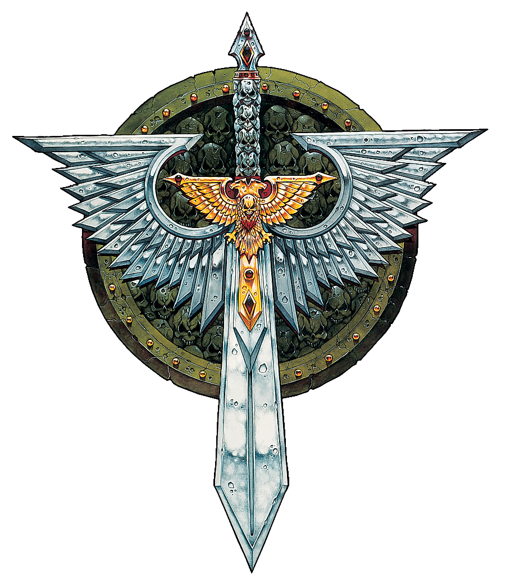

Earn your citizenship in battle
The Imperial Guard is a colossal military organization, consisting of many hundreds of thousands of armies throughout the Imperium, and forming the vast bulk of the Imperium's military machine.
The Holy Orders of the Emperor's Inquisition. Join one of our most secret force, intended to combat threats to the Imperium from the activities of alien races, demons, and heretics, respectively.
Learn about the latest research and technologies that you can use immediately to invent the future - join The Adeptus Mechanicus.